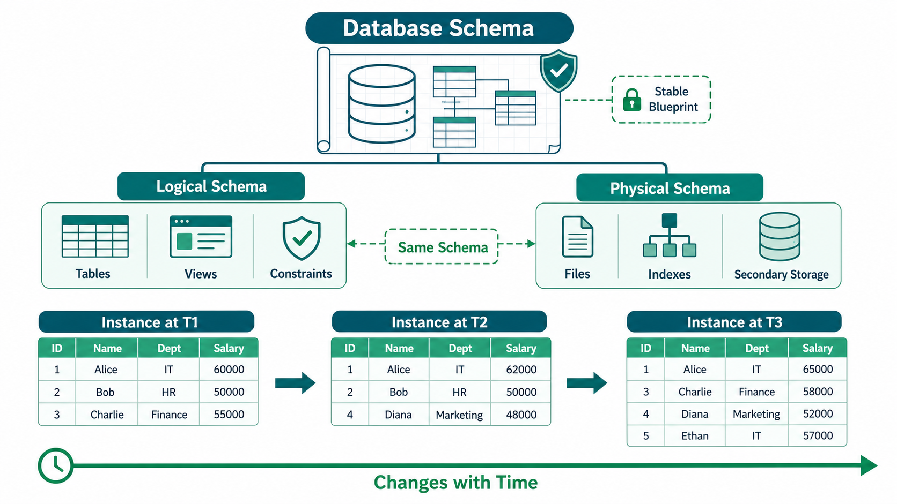

Excellent! This chapter is very important for IBPS SO IT because examiners often ask confusing questions like:
- Schema vs Instance
- Logical Schema vs Physical Schema
- What is Database Schema?
Many students get confused between Schema and Instance, but after this explanation, you won't.
DBMS - Data Schemas
First Understand the Word "Schema"
The word Schema simply means
Blueprint / Design / Structure
Think of building a house.
Before building the house, an engineer prepares a blueprint.
It shows
- Number of rooms
- Kitchen location
- Bathroom location
- Doors
- Windows
But...
Does the blueprint contain furniture?
❌ No.
It only tells how the house will look.
Similarly,
A Database Schema is the blueprint of the database.
It tells
- Which tables exist
- Which columns exist
- Which keys exist
- How tables are related
But it does not contain actual data.
What is Database Schema?
Book says
A database schema is the skeleton structure that represents the logical view of the database.
Let's understand every word.
Skeleton Structure
Think of the human body.
A skeleton tells
- Shape
- Structure
- Connections
But it doesn't contain muscles or skin.
Similarly,
Database Schema tells
- Structure
- Tables
- Relationships
It does not store records.
Logical View
Logical View means
How the database is organized,
not how it is physically stored.
Example
Suppose we want to create a Student Database.
Schema says
Student Table
-----------------------
Roll No
Name
Age
DepartmentThat's all.
Notice
There is no Rahul, no Aman, no Priya.
Only the structure.
That is Schema.
Book says
Schema defines
How data is organized.
Meaning
It decides
- Which tables?
- Which columns?
- Which Primary Keys?
- Which Foreign Keys?
- Which Relationships?
Example
Student
----------------
StudentID (PK)
Name
Age
DepartmentIDDepartment
Department
----------------
DepartmentID (PK)
DepartmentNameRelationship
Student
|
DepartmentID
|
DepartmentAll this belongs to the Schema.
Constraints in Schema
Book says
Schema defines constraints.
What are Constraints?
Constraints are
Rules applied to data.
Example
Age
Cannot be
-5Marks
Cannot exceed
100Roll Number
Must be unique.
These rules are stored inside the Schema.
Book says
Schema contains
Entities
Relationships
Descriptions
Schema Diagram
Let's understand.
Example
College Database
Entities
Student
Teacher
CourseRelationships
Student
Studies
CourseAttributes
Student
↓
Roll
Name
AgeEverything together becomes
Database Schema.
Who designs Schema?
Book says
Database Designers.
Not programmers.
Not end users.
The Database Designer creates the schema.
Programmers simply use it.
Types of Database Schema
There are 2 types.
1. Physical Database Schema
Book says
It defines
Actual storage
Files
Indexes
Storage format
Simple Meaning
It tells
How the data is stored inside the hard disk.
Example
Suppose Student table has
1 crore records.
Questions like
- Which file?
- Which block?
- Which index?
- Which storage format?
are answered by
Physical Schema.
Example
Suppose MySQL stores
Student.ibdinside disk.
That belongs to
Physical Schema.
Physical Schema decides
- Storage files
- Indexes
- B+ Trees
- Hashing
- Block organization
- Storage location
Users never see this.
Easy Trick
Physical
↓
Hard Disk
Storage
Files
2. Logical Database Schema
Book says
Logical Schema defines
Tables
Views
Constraints
Simple Meaning
Logical Schema tells
What the database looks like.
Example
Student Table
| Roll | Name | Age |
|---|
Department Table
|DeptID|Department|
Teacher Table
|TeacherID|Name|
Relationships
Primary Key
Foreign Key
Views
Constraints
All these belong to
Logical Schema.
Notice
Logical Schema
does NOT care
where the data is stored.
It only cares
what the structure is.
Difference
Logical Schema
Answers
"What?"
Example
What tables exist?
What columns?
What relationships?
Physical Schema
Answers
"How?"
Example
How is data stored?
How are indexes created?
How are files maintained?
Easy Example
Imagine a Library.
Logical Schema
Books
BookID
Title
Author
PublisherPhysical Schema
Rack 2
Shelf 5
Book Position 18Schema Diagram
Book says
Schema can be represented using diagrams.
Example
Department
DeptID
DeptName
▲
|
DeptID
StudentID
Name
Age
StudentThis is called
Schema Diagram.

Database Instance
⭐⭐⭐⭐⭐
Very Important
IBPS Favorite
Students confuse
Schema
and
Instance.
Let's fix that forever.
What is Database Instance?
Book says
Database Instance is the state of database at any given time.
Simple Meaning
Instance means
Actual data stored in the database at a particular moment.
Example
Morning
Student Table
| Roll | Name |
|---|---|
| 1 | Rahul |
This is one instance.
Afternoon
A new student joins.
| Roll | Name |
|---|---|
| 1 | Rahul |
| 2 | Aman |
Database changed.
This is another instance.
Evening
Another student joins.
| Roll | Name |
|---|---|
| 1 | Rahul |
| 2 | Aman |
| 3 | Neha |
Another instance.
Notice
Structure never changed.
Only data changed.
What is Snapshot?
Book says
Instance is a Snapshot.
Snapshot means
A photograph
of the database
at one particular time.
Example
9 AM
Student
RahulPhoto taken.
12 PM
Student
Rahul
AmanAnother photo.
Each photo
is an Instance.
Why Schema Doesn't Change Often?
Book says
Schema is designed
before database exists.
Example
Suppose
Student Table
contains
Roll
Name
AgeAfter millions of records,
can we suddenly remove
Roll Number?
Very difficult.
Many applications depend on it.
Therefore
Schema changes very rarely.
Instance Changes Frequently
Every time
someone
- inserts
- updates
- deletes
data,
the Instance changes.
Example
Before
| Roll | Name |
|---|---|
| 1 | Rahul |
After Insert
| Roll | Name |
|---|---|
| 1 | Rahul |
| 2 | Aman |
Schema
Same
Instance
Changed.
Book says
DBMS ensures every Instance is Valid.
Meaning
Suppose
Age
Cannot be negative.
Someone inserts
Age = -10DBMS rejects it.
Because
Schema defined
constraints.
Complete Flow
Database Designer
│
Creates Schema
│
Database Created
│
Users Insert Data
│
Database Instance ChangesReal-Life Example
Suppose you create an Attendance Register.
Schema
Columns
Roll No
Name
AttendanceThis never changes.
Instance
Monday
| Roll | Name | Attendance |
|---|---|---|
| 1 | Rahul | Present |
Tuesday
| Roll | Name | Attendance |
|---|---|---|
| 1 | Rahul | Absent |
Structure is same.
Only data changed.
Schema vs Instance (Most Important)
| Database Schema | Database Instance |
|---|---|
| Blueprint of database | Actual data inside database |
| Defines structure | Defines current data |
| Created by Database Designer | Created by user operations (Insert, Update, Delete) |
| Changes very rarely | Changes frequently |
| Contains tables, relationships, constraints | Contains records |
| Does not contain actual data | Contains actual data |
| Static | Dynamic |
| Exists before data | Exists after data is entered |
Logical Schema vs Physical Schema
| Logical Schema | Physical Schema |
|---|---|
| Describes what data is stored | Describes how data is stored |
| Tables | Files |
| Views | Blocks |
| Relationships | Indexes |
| Constraints | Storage organization |
| Visible to designers/programmers | Mostly hidden from users |
⭐ Easy Memory Trick
Schema
Think
S = Structure
Schema
↓
Structure
↓
StaticInstance
Think
I = Information (Current Data)
Instance
↓
Inserted Data
↓
Changes EverydayExample to Remember Forever
Suppose you create an Excel sheet.
Excel Columns
Roll No
Name
MarksThis is the Schema.
Rows
1 Rahul 90
2 Aman 85
3 Neha 95These rows are the Instance.
Tomorrow
4 Priya 88added.
Schema
Same.
Instance
Changed.
⭐ IBPS SO IT Quick Revision
| Topic | Remember |
|---|---|
| Schema | Blueprint/Structure of database |
| Database Schema | Defines tables, relationships, constraints |
| Physical Schema | How data is stored (files, indexes, storage) |
| Logical Schema | What data is stored (tables, views, relationships) |
| Instance | Actual data at a particular moment (snapshot) |
| Schema | Static, changes rarely |
| Instance | Dynamic, changes frequently |
| Database Designer | Creates the schema |
| DBMS | Ensures every database instance satisfies the constraints defined in the schema |
🎯 IBPS SO IT Frequently Asked Questions
Q1. What is a Database Schema?
✅ The logical blueprint (structure) of a database.
Q2. Does a Schema contain data?
❌ No.
It contains only the structure (tables, relationships, constraints), not the actual records.
Q3. What is a Database Instance?
✅ The current state (snapshot) of the database containing actual data at a particular time.
Q4. Which changes more frequently?
✅ Database Instance.
Q5. Which schema defines tables, views, and constraints?
✅ Logical Database Schema.
Q6. Which schema defines files, indexes, and storage organization?
✅ Physical Database Schema.
🧠 Final Exam Trick
Remember this sentence:
Schema is the "design" of the database, while Instance is the "data" inside the database at a particular time.
If you remember just this one line, you can answer almost every Schema vs Instance question in IBPS SO IT.